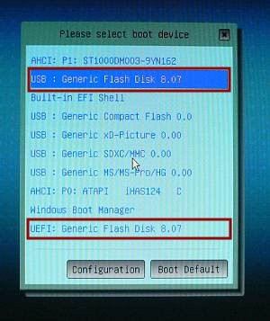
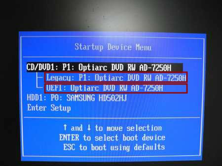
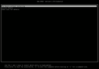
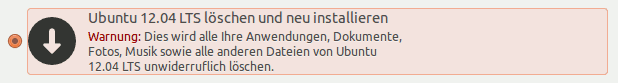
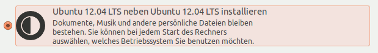
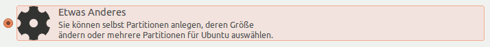
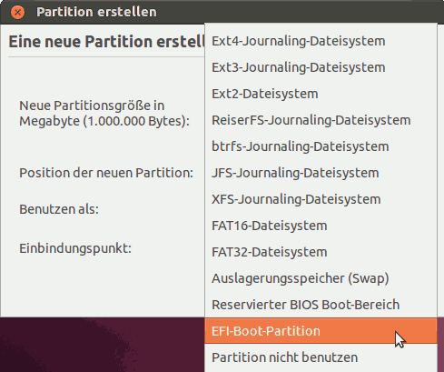

EFI Installation Erfahrungsberichte
Archivierte Anleitung
Dieser Artikel wurde archiviert, da er - oder Teile daraus - nur noch unter einer älteren Ubuntu-Version nutzbar ist. Diese Anleitung wird vom Wiki-Team weder auf Richtigkeit überprüft noch anderweitig gepflegt. Zusätzlich wurde der Artikel für weitere Änderungen gesperrt.
Zum Verständnis dieses Artikels sind folgende Seiten hilfreich:
Seit etwa zwei Jahren kommen zunehmend Computer-Systeme auf den Markt, die mit einem EFI statt dem lange Zeit genutzten BIOS ausgestattet sind. Im folgenden werden Erfahrungen gesammelt und damit erste Anleitungen gegeben, wie man Ubuntu auf einem solchen System installiert und startet.
Dabei wird hier auf Besonderheiten und Probleme eingegangen, die den Start der Ubuntu-CD, die Installation von Ubuntu sowie den ersten Start nach erfolgter Installation betreffen - sofern sie etwas mit der Nutzung von EFI zu tun haben. Anderweitige Probleme mit Ubuntu auf EFI-Systemen, die eventuell nach längerer Laufzeit hervortreten, sind nicht Gegenstand dieses Artikels.
Vorbemerkung¶
Grundsätzlich ist die Installation von Ubuntu auf einem System mit einem EFI nicht schwieriger, als auf einem System mit einem BIOS. D.h. besondere manuelle Eingriffe sind in der Regel vor oder während der Installation nicht notwendig, sofern das EFI seitens des System- oder Mainboard-Herstellers sauber implementiert wurde.
Voraussetzung ist allerdings, dass man den Boot-Mechanismus - der gegenüber einem BIOS-System komplexer ist - kennt und damit umzugehen weiß. Daher muss man dem Startvorgang der Ubuntu-CD oder des Ubuntu-USB-Sticks besondere Aufmerksamkeit schenken, um etwaigen Fallstricken die sich daraus ergeben können von vornherein aus dem Weg zu gehen.
Unterstützt der Computer UEFI?¶
Ubuntu Live-CD/DVD¶
Um vorab herauszufinden, ob ein Computer UEFI, BIOS oder beides unterstützt, startet man ein Live-System. Am Desktop öffnet man ein Terminal [1] und gibt den folgenden Befehl ein:
sudo dmidecode -t0 | grep -Ei "(BIOS boot|UEFI)"
Als Rückmeldung erhält man dann je nach System:
Windows Installation¶
Man kann bei einem neuen Computer mit Windows vorab festzustellen, wie das Windows installiert wurde.
Dazu startet man das Windows und öffnet am Desktop die
Eingabeaufforderung mit Adminrechten
und gibt in dieses Terminal [1] dann ein:
bcdedit /enum
Die Ausgabe im Bereich {bootmgr} gibt dann Auskunft über das Startverzeichnis für den Windows-Bootmanager. Die relevanten Zeilen sollten bei einer EFI-Installation wie folgt aussehen:
device partition=\Device\HarddiskVolume1 path \EFI\Microsoft\Boot\bootmgfw.efi
Auch mit diesen Angaben lassen sich erste Rückschlüsse auf die Unterstützung hinsichtlich EFI erzielen.
Der Start auf einem EFI-System¶
Dreierlei Dinge machen den Start auf einem EFI-System gegenüber einem BIOS-System komplexer und damit für den Unwissenden verwirrender: Erstens verfügen derzeitige EFIs über eine BIOS-Kompatibilitäts-Modus, zweitens handelt es sich bei den Installations-Medien moderner Betriebssysteme um Hybriden und drittens wurde in das EFI ein Boot-Management integriert.
BIOS-Kompatibilitäts-Modus¶
Da nicht alle Betriebssysteme mit EFI umgegehen können - insbesondere ältere MS-Betriebssysteme sind von dieser Limitierung betroffen - bringen die meisten EFI derzeit einen BIOS-Kompatibiliäts-Modus (engl. Compatibility Support Module, kurz CSM) mit, der die Emulation eines herkömmlichen BIOS erlaubt. Damit können dann auch mit EFI nicht kompatible Betriebssysteme auf einem solchen Rechner installiert werden.
Man kann den BIOS-Modus - wenn gewünscht oder aus anderen Gründern erforderlich - natürlich auch für solche Betriebssysteme nutzen, die eigentlich schon mit EFI umgehen können.
Im BIOS-Modus verhält sich das System - was Start und Installation anbelangt - dann so, wie man es von einem reinen BIOS-System gewohnt ist.
Das Vorhandensein des BIOS-Modus zwingt den Anwender aber auch häufig, sich beim Start eines Start-Datenträgers für einen der beiden Modi zu entscheiden. Dies ist mittels Boot-Menü des EFI möglich:
Hinweis:
Das Boot-Menü erreicht man nach Einschalten des Rechners meist über eine der folgenden Tasten: Esc , F8 , F9 , F10 oder F12 . Außerdem sollte kurz nach dem Einschalten des Rechners auf dem Start-Bildschirm ein Hinweis auf die entsprechende Taste erscheinen. Im Zweifel empfiehlt sich ein Blick in das Handbuch des Rechners bzw. Mainboards. Liegt kein Handbuch bei, so kann man dieses in aller Regel auf den Support-Seiten der Hersteller herunterladen.
| BIOS-Kompatibilitäts-Modus im Boot-Menü von EFIs | |
| ASROCK 970 Extreme3 mit Ubuntu-USB-Stick | LENOVO ThinkCenter M81 5084 mit Ubuntu-CD |
|  |  |
| Der mit "USB:" beginnende Eintrag startet beim ASROCK den USB-Stick im BIOS-Modus, der mit "UEFI:" würde das Laden im EFI-Modus einleiten. | Beim Lenovo wird der Eintrag für das Starten der Ubuntu-CD im BIOS-Modus mit "Legacy:" eingeleitet, über den "UEFI:"-Eintrag startet man die CD im EFI-Modus. |
Wie man sieht, sind die Bezeichnungen im Boot-Menü nicht einheitlich. Gut vorstellbar, dass andere Hersteller auch wieder ganz andere Bezeichnungen haben. Im Zweifel muss man einfach ausprobieren, welcher Eintrag welchen Modus startet.
Erkennbar ist an den Beispielen auch, dass die Auswahl des Modus pro Datenträger und nicht etwa global getroffen wird. D.h., dass man eine Auswahl zwischen den Modi nur dann hat, wenn der Datenträger so eingerichtet ist, dass er beide Modi unterstützt.
Hybride Installations-Medien¶
Die Installations-Medien heutiger Betriebssysteme sind häufig hybrid, d.h. sie können sowohl im BIOS-Modus als auch im EFI-Modus gestartet werden und stellen demzufolge eine Auswahlmöglichkeit im Boot-Menü des EFI bereit (siehe oben). Bei der Ubuntu-CD lassen sich die beiden Modi anhand ihres unterschiedlichen Startbildschirms gut unterscheiden:
| Unterschiedliche Start-Bildschirme | ||
| BIOS-Modus - Start von CD | BIOS-Modus - Start vom USB-Stick | EFI-Modus - GRUB-Menü (CD oder Stick) |
|  | ||
| Der bekannte Start-Bildschirm der Ubuntu-CD. Durch Drücken einer beliebigen Taste kann man das erweiterte Isolinux-Menü optional aufrufen. | Der Start-Bildschirm, wenn man die Ubuntu-CD auf einen USB-Stick übertragen hat und davon lädt. | Im EFI-Modus wird ein GRUB-Menü stets angezeigt. Häufig erscheint zuvor noch mehr oder weniger lang die Fehlermeldung error: prefix is not set. Hier heißt es einfach abwarten. Das GRUB-Menü erscheint je nach System nach mehr oder weniger langer Wartezeit dennoch. Also Ruhe bewahren! |
Hinweis:
Ab Quantal Quetzal erscheint bei der Auswahl im EFI-Modus statt error: prefix is not set der Hinweis secure boot not enabled - was dann darauf hinweist, das diese Option nicht aktiviert wurde. Mit diesem Startmedium ist im Prinzip dann eine entsprechende Installation möglich, die eine für secure-boot erforderliche, signierte GRUB-Startdatei erstellt.
Boot-Management¶
EFI-Systeme verfügen über einen integrierten Boot-Manager, über den unterschiedliche Betriebssystem-Loader auf einem Datenträger verwaltet und gestartet werden können. Voraussetzung dafür ist, dass auf dem Datenträger vor oder während der Installation eine EFI-System-Partition eingerichtet wird und das Betriebssystem dort einen EFI-Loader anlegt.
Die Betriebssystem-Loader sind dabei im Pfad /EFI in einem dem Betriebssystem entsprechenden Verzeichnis abzulegen und müssen auf die Dateierweiterung .efi enden.
Durch das Einrichten der EFI-System-Partition gemäß oben genannter Spezifikationen alleine erscheint aber im Boot-Menü des EFI noch kein Eintrag zur Auswahl des Betriebssystems. Diese Einträge werden im NVRAM des EFI gespeichert und müssen dementsprechend vom Installations-Programm des Betriebssystems dort eingerichtet werden.
Unter Linux erfolgt die Registrierung einer Betriebssystem-Loader-Datei im NVRAM mittels des Terminal-Programms efibootmgr.
Im Normalfall kümmert sich das Installations-Programm von Ubuntu um all diese Dinge selbständig, allerdings nur, wenn das Installations-Medium im EFI-Modus gestartet wurde. Daher ist es eben auch wichtig, dass man beim System-Start den passenden Modus wählt.
Allerdings gilt es das Boot-Managment unbedingt im Hinterkopf zu behalten, denn hier ergeben sich eine Menge möglicher Fehlerquellen, die nach einer scheinbar erfolgreichen Installation Ubuntus beim Neustart den Start der Ubuntu-Installation verhindern können (sieh dazu im Detail unten).
Installation im EFI-Modus¶
Die Installation im EFI-Modus läuft grundsätzlich genauso ab, wie herkömmlich vom BIOS-Modus gewohnt. Allerdings gibt es wesentliche Unterschiede bei der Installationsart. Je nach gewählter Installationsart führt die Ubuntu-Installation zu folgendem Standardverhalten:
Informationen, Erfahrungen sowie Maßnahmen zur Bearbeitung nach der Installation sind in dem separaten Artikel
eingeflossen.
Vorhandenes Betriebssystem löschen und Ubuntu neu installieren¶

Diese Installationsart ist die unproblematischste. Es wird automatisch
das vorhandene Betriebssystem gelöscht,
in jedem Fall eine GPT auf dem Datenträger angelegt,
eine Ubuntu-Root-Partition sowie eine Partition für die Auslagerungsdatei (swap) eingerichtet,
in jedem Fall eine EFI-System-Partition auf dem Datenträger erstellt,
GRUB-EFI auf die EFI-System-Partition installiert,
und ein Eintrag im EFI-Boot-Menü hinterlegt.
Ubuntu neben einem vorhanden Betriebssystem installieren¶

Achtung!
Derzeit erkennt das Ubuntu-Setup-Programm leider keine bestehende, andere EFI-Installation (Windows oder andere Distributionen). Um Ubuntu neben einer bestehenden EFI-Installation einzurichten, muss daher im Moment die Installationsart Etwas Anderes gewählt werden. Außerdem muss man die andere Distribution später manuell in das GRUB 2-Menü einbinden, wenn man nicht ausschließlich über das EFI-Menü auswählen will.
Ansonsten kommt es bei dieser Installationsart darauf an, wie der Datenträger eingerichtet ist, ob er also über eine MPT oder eine GPT verfügt:
Datenträger mit vorhandener GPT¶
GUID Partition Table, kurz GPT ist der neue Standard für das Format von Partitionstabellen auf Festplatten. GPT ist der Nachfolger der Master-Boot-Record-Partitionstabellen.
Bei einem Datenträger mit einer GPT wird bei dieser Installationsart automatisch
eine Ubuntu-Root-Partition neben den schon vorhanden Partitionen eingerichtet,
eine Partition für die Auslagerungsdatei erstellt - sofern eine solche nicht schon besteht,
ein GRUB-EFI auf eine bereits vorhanden EFI-System-Partition installiert oder es wird - wenn noch keine EFI-System-Partition auf dem Datenträger existiert - eine solche angelegt,
sowie ein Eintrag im EFI-Boot-Menü erstellt.
Datenträger mit vorhandener MPT¶
MPT steht für Master-Partitions-Tabelle und soll auf eine klassische MBR-Partitionstabelle hinweisen, also ein Datenträger, der ein "herkömmliches" Partitionierungsschema innerhalb des Master Boot Records aufweist, auch MSDOS-Partitionierungs-Schema genannt.
Ist auf dem Datenträger bereits eine MPT vorhanden, so lässt sich Ubuntu darauf über diese Installationsart nicht vollständig im EFI-Modus installieren, auch wenn die Installation scheinbar erfolgreich bis zum Ende läuft. Es wird eine Ubuntu-Root-Partition erzeugt sowie eine Partition für die Auslagerungsdatei, wenn nicht schon vorhanden und Ubuntu wird installiert.
Es wird aber
keine EFI-System-Partition angelegt,
und kein GRUB installiert auch nicht in der Version für PC-BIOS.
Die Folge: Ubuntu kann nach Fertigstellung der Installation nicht gestartet werden.
Siehe auch Installation im BIOS-Modus
Installationsart Etwas Anderes¶

Wählt man diese Installationsart, so gilt folgendes:
Erstellt man hier eine neue Partitionstabelle so wird stets eine GPT angelegt.
Es muss unbedingt eine EFI-System-Partition eingerichtet werden. Diese heißt innerhalb des Installationsprogramms "EFI-Boot-Partition".
Hinweis:
Auch wenn sich auf einer MPT grundsätzlich eine EFI-System-Partition einrichten lässt muss es nicht heißen, dass das EFI des Systems damit umgehen kann. Im schlimmsten Fall lässt sich Ubuntu dann nicht starten. Außerdem ist die Kombination einer ESP auf einer MPT wenig sinnvoll:
Möchte man mehrere Linux-Systeme auf einem Rechner verwalten, so ist dies mit den Linux eigenen Bootmanagern viel komfortabler möglich, als mit dem EFI-internen. Möchte man Windows- und Linux-Systeme über den EFI-Manager verwalten, so ist dies nur möglich, wenn der betreffende Datenträger über eine GPT verfügt. Windows kann im EFI-Modus nur auf einem Datenträger mit GPT installiert werden.
Installation im BIOS-Modus¶
Um Ubuntu auf einem System mit UEFI-BIOS im BIOS-Modus installieren zu können, muss man das Ubuntu-Installations-Medium unbedingt im BIOS-Modus durch entsprechende Auswahl im EFI-Menü starten.
Der Ablauf erfolgt danach im Wesentlichen wie unter Installation beschrieben.
MBR-GPT-Mischmasch¶
Ein "GPT-MBR-Mischmasch" entsteht ganz leicht beim Herumprobieren von verschiedenen Installationen auf einem EFI-System. Dieses Herumprobieren wird dadurch provoziert, dass der Ubuntu-Installer - genauer gesagt das Paket os-prober - derzeit keine EFI-Installationen erkennt.
Beim Herumprobieren - sprich beim erneuten Installieren - werden dann in der Regel, Partitionstabellen nur neu angelegt. Beim Neuanlegen werden aber Strukturen einer alten anderen Partitionstabelle nicht gelöscht - zumindest sehr häufig nicht.
D.h. wenn man z.B. auf dem Datenträger bisher ein msdos-Partitionierungs-Schema hatte und legt dann ein GPT-Partitionierungs-Schema an, dann können Reste des msdos-Schemas erhalten bleiben, obwohl das neue GPT-Schema eingerichtet wird und an sich auch funktioniert. Das gilt noch mehr für den umgekehrten Fall, dass man erst ein GPT-Schema hatte und dann zum msdos-Schema wechselt.
Problem für den "normalen Nutzer" ist dabei, dass sowohl im Windows-Setup als auch im Ubuntu-Installer gar nicht oder nicht ausreichend transparent wird, welches Schema verwendet bzw. neu angelegt wird.
Erkennen eines MBR-GPT-Mischmasches¶
Das Vorliegen von msdos- und GPT-Strukturen auf ein und dem selben Datenträger erkennt man an der Ausgabe von parted:
ubuntu@ubuntu:~$ sudo parted -l Warning: /dev/sda contains GPT signatures, indicating that it has a GPT table. However, it does not have a valid fake msdos partition table, as it should. Perhaps it was corrupted -- possibly by a program that doesn't understand GPT partition tables. Or perhaps you deleted the GPT table, and are now using an msdos partition table. Is this a GPT partition table? Yes/No?
In GParted erkennt man es daran, dass keine Partitionen auf dem Datenträger angezeigt werden.
Auflösen des MBR-GPT-Mischmasches vor vollständiger Neuinstallation¶
Den MBR-GPT-Mischmasch kann man bei Neuinstallation auflösen indem man vor der Installation beide Strukturen vollständig entfernt. Das geht von Linux aus wie folgt:
Löschen des msdos-Schemas¶
sudo dd if=/dev/zero of=/dev/sdX count=2048
/dev/sdX ist dabei durch den Datenträger zu ersetzen, den man bereinigen möchte. Mit diesem Befehl wird der MBR und der dahinterliegende verborgene Bereich genullt, was für das Löschen des msdos-Schemas ausreichend ist.
Löschen des GPT-Schemas¶
Obwohl die primären GPT-Informationen auch innerhalb der ersten 2048 Sektoren liegen, reicht hier für ein sauberes Löschen der GPT-Struktur ein Nullen dieses Bereiches nicht aus. Ein vollständiges Löschen ist effizient nur mittels gdisk möglich:
sudo gdisk /dev/sdX
/dev/sdXmit der zu bereinigenden Platte ersetzen.gdisk präsentiert daraufhin wahrscheinlich die folgende Abfrage:
GPT fdisk (gdisk) version 0.8.1 Partition table scan: MBR: MBR only BSD: not present APM: not present GPT: present Found valid MBR and GPT. Which do you want to use? 1 - MBR 2 - GPT 3 - Create blank GPT Your answer:
Da man hier ohnehin alle Strukturen vom Datenträger löschen möchte, ist es in dem Fall egal, ob man 1 , 2 oder 3 drückt.
X drücken um in das extra-functionality-Menü zu gelangen.
Z drücken um etwaige Reste eines GPT-Schemas zu löschen.
Dabei beide Nachfragen mit Y bestätigen gdisk sollte anschließend selbständig schließen.
Alternativ könnte man auch den vollständigen Datenträger mit Nullen überschreiben lassen, was dann aber im Verhältnis viel länger dauern würde.
Wenn beide Strukturen gelöscht wurden, dann kann man wieder sauber neu installieren, wobei man dabei unbedingt die Hintergründe einer Installation auf einem EFI-System beachten muss. Siehe dazu oben ab Vorbemerkung).
Auflösen des MBR-GPT-Mischmasches im bereits installierten und an sich lauffähigen System¶
Auch wenn das System bereits installiert ist, kann man den Mischmasch aus msdos- und GPT-Strukturen beseitigen. Voraussetzung ist, dass man sich zunächst gdisk auf dem System installiert.
Achtung!
Auch wenn gdisk in aller Regel zuverlässig arbeitet, stellen Operationen am Partitionierungs-Schema einen sehr risikoreichen Vorgang dar, bei dem es im schlimmsten Fall zu Datenverlust kommen kann. Wichtige Daten müssen daher vor der Operation unbedingt extern gesichert werden!
Löschen von nicht benötigten verbliebenen GPT-Strukturen¶
Nutzt man auf dem System aktuell ein msdos-Schema und möchte übriggebliebene GPT-Strukturen löschen, so geht man wie folgt vor:
sudo gdisk /dev/sdX
/dev/sdXmit der zu bereinigenden Platte ersetzen.gdisk präsentiert daraufhin wahrscheinlich die folgende Abfrage:
GPT fdisk (gdisk) version 0.8.1 Partition table scan: MBR: MBR only BSD: not present APM: not present GPT: present Found valid MBR and GPT. Which do you want to use? 1 - MBR 2 - GPT 3 - Create blank GPT Your answer:
Hier muss man mit 1 antworten!
X drücken um in das extra-functionality-Menü zu gelangen.
Z drücken um etwaige Reste eines GPT-Schemas zu löschen.
Achtung: Nach drücken von Z stellt gdisk zwei Fragen. Die erste bezüglich des Löschens des GPT-Schemas beantwortet man mit Y . Die zweite Frage bezüglich des MBR muss man unbedingt mit N beantworten, da man andernfalls das bestehende, funktionstüchtige msdos-Schema löscht!
Löschen von nicht benötigten verbliebenen msdos-Strukturen¶
Setzt man aktuell eine GPT-Struktur ein und muss Reste einer msdos-Struktur entfernen, so erfolgt dies ebenfalls mittels gdisk:
sudo gdisk /dev/sdX
/dev/sdXmit der zu bereinigenden Platte ersetzen.gdisk präsentiert daraufhin wahrscheinlich die folgende Abfrage:
GPT fdisk (gdisk) version 0.8.1 Partition table scan: MBR: MBR only BSD: not present APM: not present GPT: present Found valid MBR and GPT. Which do you want to use? 1 - MBR 2 - GPT 3 - Create blank GPT Your answer:
Hier muss man mit 2 antworten!
X drücken, um in das extra-functionality-Menü zu gelangen.
N drücken, um einen sauberen Protectiv-MBR zu erzeugen und damit Reste eines msdos-Schemas zu löschen.
W drücken, um die Veränderungen zu übernehmen und gdisk zu verlassen.
Die Nachfrage mit Y bestätigen.
Links¶
efibootmgr Terminalprogramm zum Bearbeiten des NVRAM
EFI Nachbearbeitung - Maßnahmen nach einer Installation
Beispiel
 - ein externer Link
- ein externer LinkWelche Themen gehören in Rund ums Wiki - ein Thema im Forum
- Erstellt mit Inyoka
-
 2004 – 2017 ubuntuusers.de • Einige Rechte vorbehalten
2004 – 2017 ubuntuusers.de • Einige Rechte vorbehalten
Lizenz • Kontakt • Datenschutz • Impressum • Serverstatus -
Serverhousing gespendet von